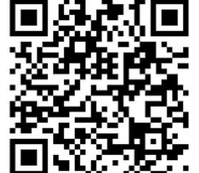

환경경영
제조 공정의 환경 영향을 최소화하고 자원 효율을 높입니다.
- 공정 에너지 사용 절감
- 원부자재 폐기물 분리·재활용
- 친환경 소재 적용 확대
환경·사회·지배구조 전반에서 책임을 다하며,
지속가능한 제조기업으로 성장해 나갑니다.
㈜태광인더스트리는 환경경영, 사회적 책임, 투명한 지배구조를 경영의 핵심 가치로 삼아 지속가능한 성장을 추구합니다.
제조 공정의 환경 영향을 최소화하고 자원 효율을 높입니다.
임직원과 지역사회의 안전·상생을 우선합니다.
윤리경영과 준법경영으로 신뢰를 구축합니다.
법규 준수와 윤리경영을 기반으로 모든 이해관계자와 신뢰 관계를 구축합니다.
국내외 관련 법령과 자동차 산업 규제를 철저히 준수하며, 정기적으로 준수 현황을 점검합니다.
협력사 및 거래처와 공정하고 투명한 거래 원칙을 지키며 부당한 거래 행위를 금지합니다.
고객과 거래처의 기술·영업 정보를 안전하게 관리하고 외부 유출을 방지합니다.
산업안전보건 기준을 준수하고 안전한 작업환경을 지속적으로 개선합니다.
임직원이 일상 업무에서 지켜야 할 행동 원칙을 정하고 실천합니다.
모든 업무를 정직하게 수행하고 약속을 지킵니다.
회사와 개인의 이해가 충돌하는 행위를 하지 않습니다.
금품·향응 수수 등 일체의 부패 행위를 금지합니다.
구성원 간 인격을 존중하고 차별·괴롭힘을 배격합니다.
부당행위 신고 및 컴플라이언스 관련 문의를
아래 QR 코드를 통해 접수해 주세요.
